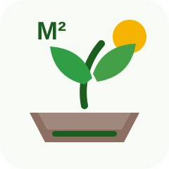
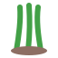
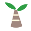

Calcule a área
Informe largura e comprimento do espaço para descobrir a área disponível em metros quadrados.

Canteiro²Concurso Agrinho 2026
Planeje melhor, plante com consciência.
Um simulador educativo para planejar hortas e canteiros por metro quadrado, estimando culturas, espaçamentos e distribuição do plantio.
Planejar meu canteiroComo funciona
Informe largura e comprimento do espaço para descobrir a área disponível em metros quadrados.
Selecione uma ou mais culturas e veja estimativas de quantidade de plantas com base no espaçamento.
Acompanhe uma grade educativa com cores e ícones para entender a distribuição do plantio.
Simulador
Preencha os dados do espaço, escolha até três culturas e gere uma estimativa educativa para o canteiro.
Grade do canteiro
Exibição reduzida para facilitar a visualização. A quantidade total estimada aparece nos resultados.
A grade representa uma simulação visual do canteiro informado. Quando há mais de uma cultura, o espaço é dividido em partes aproximadas entre os plantios selecionados. Cada cor e ícone representa uma cultura diferente. A quantidade total é calculada pelo espaçamento médio de cada planta.
Essa distribuição é educativa e serve como ponto de partida. No plantio real, a posição das culturas pode mudar conforme sol, irrigação, tipo de solo, época do ano e orientação técnica.
Comparação de culturas
| Cultura | Espaçamento | Plantas no espaço | Ciclo | Sol recomendado | Dica curta |
|---|
Dicas sustentáveis
Plantas bem distribuídas competem menos por luz, água e nutrientes.
Restos orgânicos podem virar adubo e melhorar a saúde do solo.
Irrigue nos horários mais frescos e observe a umidade antes de regar.
Alternar culturas ajuda a reduzir desgaste do solo e problemas de manejo.
Planejar a quantidade reduz perda de mudas, sementes e insumos.
Cor, textura e drenagem indicam cuidados antes do plantio.

Um canteiro variado melhora o aprendizado e distribui melhor os riscos.

Cobertura orgânica conserva umidade e reduz erosão em pequenas áreas.
Sobre o projeto
O Canteiro² é um simulador educativo de planejamento de canteiros por metro quadrado. Ele ajuda estudantes, famílias, escolas e pequenos produtores a calcular a área de um canteiro, escolher culturas alimentícias, estimar quantas plantas cabem no espaço e visualizar uma distribuição inicial do plantio.
O projeto dialoga com o tema “Agro forte, futuro sustentável: equilíbrio entre produção e meio ambiente” ao mostrar que produzir bem também envolve planejamento, cuidado com recursos naturais, diversidade de culturas e respeito ao espaço disponível.
As informações apresentadas são estimativas educativas. O plantio real pode variar conforme clima, solo, irrigação, adubação, época do ano e orientação técnica.
A combinação de culturas é uma simulação inicial. Na prática, algumas plantas se desenvolvem melhor juntas e outras podem competir por luz, água e nutrientes.